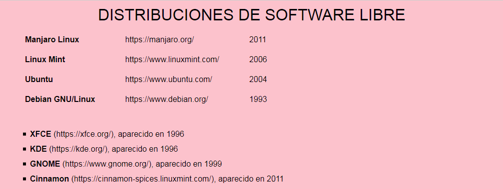

Resuelva los siguientes ejercicios guardando las respuestas en una carpeta cuyo nombre contenga su nombre y apellidos.
Corrija los errores del siguiente documento para que esté bien formado.
<?xml version="1.0" encodin="UTE-8"?>
<inventor id>Otto Blathy, Miksa Déri & Károly Zipernowsky
<invento codigo=001>transformador eléctrico
</inventor
</inventos>
Escriba una hoja de estilo CSS para que el siguiente documento se vea en el navegador como muestra la imagen.
<?xml version="1.0" encoding="UTF-8"?>
<software-libre>
<lanzamientos>
<lanzamiento distribucion="manjaro" version="17.1" año="2017" mes="12" escritorio="xfce" kernel="4.14" />
<lanzamiento distribucion="mint" version="18.3" año="2017" mes="11" escritorio="cinnamon" kernel="4.10" />
<lanzamiento distribucion="mint" version="19" año="2018" mes="6" escritorio="cinnamon" kernel="4.15"/>
<lanzamiento distribucion="ubuntu" version="17.10" año="2017" mes="10" escritorio="gnome" kernel="4.13"/>
<lanzamiento distribucion="ubuntu" version="18.04" año="2018" mes="4" escritorio="gnome" kernel="4.15" />
<lanzamiento distribucion="debian" version="8" año="2015" mes="4" escritorio="gnome" kernel="3.16" />
<lanzamiento distribucion="debian" version="9" año="2017" mes="6" escritorio="gnome" kernel="4.09" />
</lanzamientos>
<distribuciones>
<distribucion id="manjaro">
<nombre>Manjaro Linux</nombre>
<web>https://manjaro.org/</web>
<nacimiento>2011</nacimiento>
</distribucion>
<distribucion id="mint">
<nombre>Linux Mint</nombre>
<web>https://www.linuxmint.com/</web>
<nacimiento>2006</nacimiento>
<derivada>ubuntu</derivada>
</distribucion>
<distribucion id="ubuntu">
<nombre>Ubuntu</nombre>
<web>https://www.ubuntu.com/</web>
<nacimiento>2004</nacimiento>
<derivada>debian</derivada>
</distribucion>
<distribucion id="debian">
<nombre>Debian GNU/Linux</nombre>
<web>https://www.debian.org/</web>
<nacimiento>1993</nacimiento>
</distribucion>
</distribuciones>
<escritorios>
<escritorio id="xfce">
<nombre>XFCE</nombre>
<web>https://xfce.org/</web>
<nacimiento>1996</nacimiento>
</escritorio>
<escritorio id="kde">
<nombre>KDE</nombre>
<web>https://kde.org/</web>
<nacimiento>1996</nacimiento>
</escritorio>
<escritorio id="gnome">
<nombre>GNOME</nombre>
<web>https://www.gnome.org/</web>
<nacimiento>1999</nacimiento>
</escritorio>
<escritorio id="cinnamon">
<nombre>Cinnamon</nombre>
<web>https://cinnamon-spices.linuxmint.com/</web>
<nacimiento>2011</nacimiento>
</escritorio>
</escritorios>
<kernels>
<kernel id="4.15" año="2018" mes="1" />
<kernel id="4.14" año="2017" mes="11" />
<kernel id="4.13" año="2017" mes="9" />
<kernel id="4.10" año="2017" mes="2" />
<kernel id="4.09" año="2016" mes="12" />
<kernel id="3.16" año="2014" mes="8" />
</kernels>
</software-libre>

A partir del mismo documento XML del ejercicio 2, escriba las expresiones XPath que devuelvan exactamente las respuestas indicadas en los cuadros. Escriba todas las expresiones XPath en un único fichero de texto, numerando las respuestas.
Manjaro Linux
Linux Mint
Ubuntu
Debian GNU/Linux
kernel="4.14"
kernel="4.10"
kernel="4.13"
kernel="4.09"
<lanzamiento distribucion="manjaro" version="17.1" año="2017" mes="12" escritorio="xfce" kernel="4.14"/>
<lanzamiento distribucion="mint" version="18.3" año="2017" mes="11" escritorio="cinnamon" kernel="4.10"/>
<lanzamiento distribucion="mint" version="19" año="2018" mes="6" escritorio="cinnamon" kernel="4.15"/>
<lanzamiento distribucion="mint" version="19" año="2018" mes="6" escritorio="cinnamon" kernel="4.15"/>
distribucion="manjaro"
distribucion="mint"
distribucion="ubuntu"
escritorio="cinnamon"
escritorio="cinnamon"